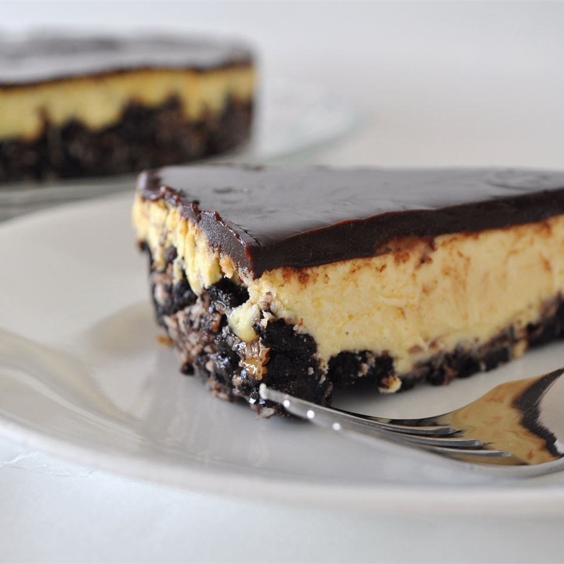

Canada Day Nanaimo Bar Cheesecake

Description
The taste of a Nanaimo bar in a cheesecake! Can't get any better than this. Make in the
jelly roll pan for serving a larger crowd. Result is thinner but still as tasty.
(You will need to adjust baking time if you use the bigger pan.)
- Cook time: 40 mins
- Additional time: 3 hrs 30 mins
- Total time: 4 hrs 10 mins
- Servings: 16
- Yield: 16 servings
Ingredients
- 2.5 cups crushed chocolate cream-filled sandwich cookies (such as OREO® Cookies)
- 1/2 cup butter, melted
- 1/4 cup chopped pecans
- 1/2 cup flaked coconut
- 4 (8 oz) packages cream cheese, softened
- 1 cup white sugar
- 1/4 cup custard powder (such as Bird's® Custard Powder)
- 4 eggs
- 6 (1 oz) squares semisweet chocolate
- 1/2 cup heavy cream
Steps
- Preheat an oven to 350 degrees F (175 degrees C).
- Stir together the cookie crumbs, melted butter, pecans, and coconut in a bowl
until the mixture is well combined. Press into the bottom of a 9x13-inch baking
dish, and refrigerate while making filling.
- Beat cream cheese, sugar, and custard powder in a large bowl with an electric
mixer until light and fluffy, and beat in eggs, 1 at a time, beating each until
fully incorporated before adding the next. Layer the filling over the crust.
- Bake in the preheated oven until the center is almost set, about 40 minutes.
Refrigerate the cheesecake until fully cold, at least 3 hours.
- Melt the semisweet chocolate in a saucepan over very low heat with the cream,
and stir until the mixture is smooth and well blended. Pour the chocolate mixture
over the cheesecake, spread with a spatula to cover the middle layer, and
refrigerate until the topping is firm, 15 to 20 minutes. Serve cold. Store
leftovers in refrigerator.
This recipe was written by user jowolf2 for
AllRecipes.com. View the original recipe
here.